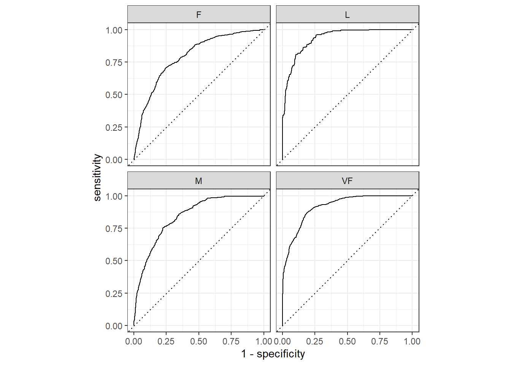
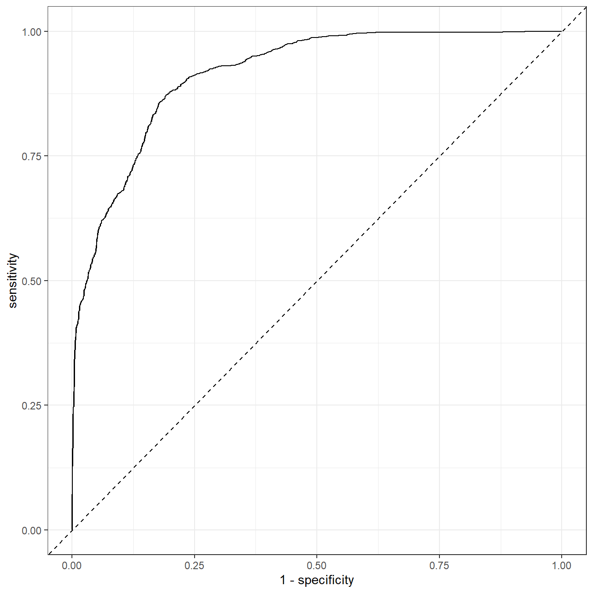
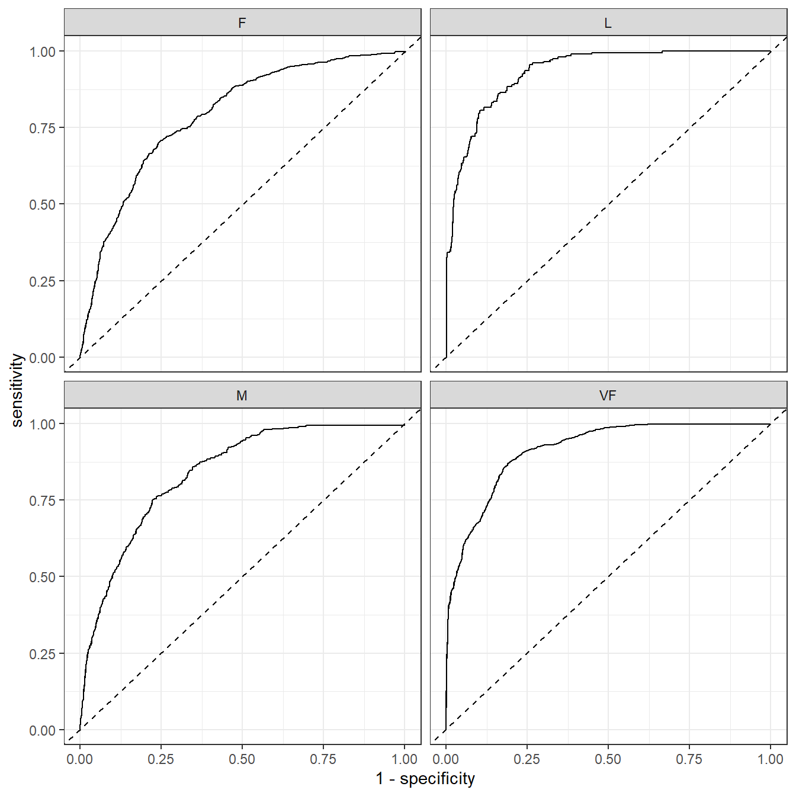
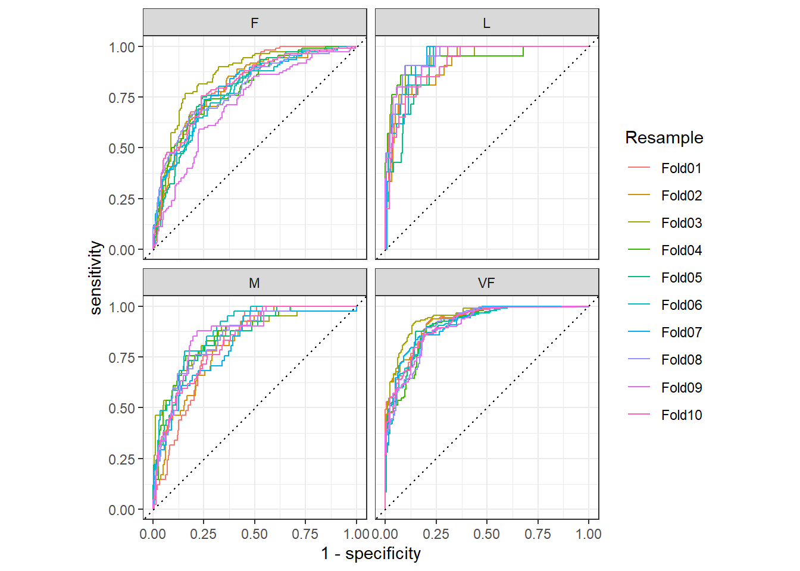
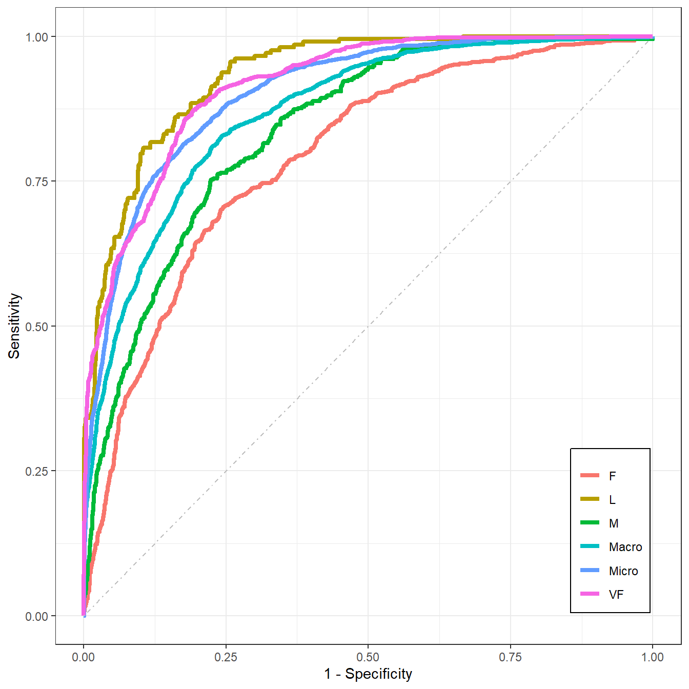

library(tidymodels)
data(hpc_cv)
tibble(hpc_cv)
## # A tibble: 3,467 × 7
## obs pred VF F M L Resample
## <fct> <fct> <dbl> <dbl> <dbl> <dbl> <chr>
## 1 VF VF 0.914 0.0779 0.00848 0.0000199 Fold01
## 2 VF VF 0.938 0.0571 0.00482 0.0000101 Fold01
## 3 VF VF 0.947 0.0495 0.00316 0.00000500 Fold01
## 4 VF VF 0.929 0.0653 0.00579 0.0000156 Fold01
## 5 VF VF 0.942 0.0543 0.00381 0.00000729 Fold01
## 6 VF VF 0.951 0.0462 0.00272 0.00000384 Fold01
## 7 VF VF 0.914 0.0782 0.00767 0.0000354 Fold01
## 8 VF VF 0.918 0.0744 0.00726 0.0000157 Fold01
## 9 VF VF 0.843 0.128 0.0296 0.000192 Fold01
## 10 VF VF 0.920 0.0728 0.00703 0.0000147 Fold01
## # ℹ 3,457 more rows32 多分类数据的ROC曲线
本文部分内容节选自tidymodels-yardstick：衡量模型性能
多分类的ROC曲线有多种方法可以实现,比如宏平均、微平均等。多分类的其他指标，比如准确率、敏感性、特异性等，计算方法都是类似的。
在R中能实现多分类ROC曲线的R包不是很多，今天给大家介绍两个。一个是yardstick，这是tidymodels的核心包之一，目前还在维护更新中，非常推荐，另一个是multiROC。
32.1 yardstick
yardstick作为tidymodels的核心包之一，其使用语法和tidy系列完全一样，并且支持所有的tidy特性，学习成本非常低。而且背靠Rstudio这颗大树，稳定性和可靠性也有保障。
接下来我们会演示衡量具有3个或更多类别的分类数据的方法。下面使用的示例数据包含了4个类别：
此数据的真实结果（obs）和预测结果（pred）都是因子型，并且数据中包含每个类别的预测概率（VF、F、M、L）。
计算多分类性能指标的函数与计算二分类性能指标的函数用法基本相同：
accuracy(hpc_cv, obs, pred)
## # A tibble: 1 × 3
## .metric .estimator .estimate
## <chr> <chr> <dbl>
## 1 accuracy multiclass 0.709
mcc(hpc_cv, obs, pred)
## # A tibble: 1 × 3
## .metric .estimator .estimate
## <chr> <chr> <dbl>
## 1 mcc multiclass 0.515有一些指标是用来处理仅具有两个类别的数据的，但是可以通过一些方法将其扩展到具有多个类别的数据。比如宏平均（macro-averaging）、宏加权平均（macro-weighted averaging）和微平均（micro-averaging）：
- 宏平均使用标准的二分类方法计算一组一对多的指标，并对这些指标取平均值。
- 宏加权平均执行相同的操作，但平均值会根据每个类别中的样本数加权。
- 微平均计算每个类别的贡献并汇总，然后从汇总中计算单个指标。
我们可以基于上面的解释自己计算，也可以使用yardstick中的函数可以帮助我们实现，只需指定estimator参数即可：
sensitivity(hpc_cv, obs, pred, estimator = "macro")
## # A tibble: 1 × 3
## .metric .estimator .estimate
## <chr> <chr> <dbl>
## 1 sensitivity macro 0.560
sensitivity(hpc_cv, obs, pred, estimator = "macro_weighted")
## # A tibble: 1 × 3
## .metric .estimator .estimate
## <chr> <chr> <dbl>
## 1 sensitivity macro_weighted 0.709
sensitivity(hpc_cv, obs, pred, estimator = "micro")
## # A tibble: 1 × 3
## .metric .estimator .estimate
## <chr> <chr> <dbl>
## 1 sensitivity micro 0.709也有一些指标使用预测概率衡量多分类数据，比如ROC曲线，此时必须将所有预测概率列都提供给函数：
roc_auc(hpc_cv, obs, VF, F, M, L) # 默认hand_till法
## # A tibble: 1 × 3
## .metric .estimator .estimate
## <chr> <chr> <dbl>
## 1 roc_auc hand_till 0.829除此之外，ROC曲线还可以使用宏加权平均衡量多分类数据：
roc_auc(hpc_cv, obs, VF, F, M, L, estimator = "macro_weighted")
## # A tibble: 1 × 3
## .metric .estimator .estimate
## <chr> <chr> <dbl>
## 1 roc_auc macro_weighted 0.868或者使用宏平均法：
roc_auc(hpc_cv, obs, VF, F, M, L, estimator = "macro")
## # A tibble: 1 × 3
## .metric .estimator .estimate
## <chr> <chr> <dbl>
## 1 roc_auc macro 0.869画图也是非常简单，先使用roc_curve计算画图所需数据（注意此函数不能更改计算方法），然后使用ggplot2画图即可：
roc_curve(hpc_cv, obs, VF, F, M, L) %>%
autoplot()
结果会同时展示4个类别的ROC曲线，当然也可以自己提取数据画。数就是图，图就是数，只要把数据提取出来，就一定能画出来图。提取数据才是最关键的一步，因为画图无非就是ggplot2而已，随便买本书（我只推荐两本：《ggplot2数据分析与图形艺术》和《R数据可视化手册》）认真看看，ggplot2就学得差不多了。提取数据多数都是列表(list)格式，在tidy的世界中更常见的是tibble和列表列，这就需要你认真学习R语言的基础知识。
plot_data <- roc_curve(hpc_cv, obs, VF, F, M, L)
class(plot_data)
## [1] "roc_df" "tbl_df" "tbl" "data.frame"
glimpse(plot_data)
## Rows: 13,876
## Columns: 4
## $ .level <chr> "VF", "VF", "VF", "VF", "VF", "VF", "VF", "VF", "VF", "VF"…
## $ .threshold <dbl> -Inf, 4.118856e-18, 1.151238e-16, 1.447982e-16, 1.857902e-…
## $ specificity <dbl> 0.0000000000, 0.0000000000, 0.0005889282, 0.0011778563, 0.…
## $ sensitivity <dbl> 1.0000000, 1.0000000, 1.0000000, 1.0000000, 1.0000000, 0.9…这个结果一看就知道.level是4个类别，.threshold是预测变量的阈值，剩下两列是敏感性和特异性，也就是画图需要的数据。
可以只画其中一个类别，我们以VF这个类别为例：
plot_data %>%
filter(.level == "VF") %>%
ggplot(aes(1-specificity, sensitivity))+
geom_line()+
geom_abline(linetype = 2)+
theme_bw()
而且有了数据，你很容易可以实现bootstrap ROC/AUC，无非就是重复多次而已。可参考：bootstrap ROC/AUC
所有类别都画就是加个分面就行了：
plot_data %>%
#filter(.level == "VF") %>%
ggplot(aes(1-specificity, sensitivity))+
geom_line()+
geom_abline(linetype = 2)+
facet_wrap(vars(.level))+
theme_bw()
一模一样。
所有这些性能指标都可以使用dplyr进行分组计算：
# 每一次重抽样的1-vs-所有ROC曲线
hpc_cv %>%
group_by(Resample) %>%
roc_curve(obs, VF, F, M, L) %>%
autoplot()
以上就是yardstick的简单介绍。后台回复tidymodels即可获取相关推文合集.
32.2 multiROC
也可以实现多分类的ROC曲线，但是很久不更新了，上次更新是2018.6.26。
github地址：https://github.com/WandeRum/multiROC
library(multiROC)还是用上面的数据作为演示。使用起来很费事，首先得准备正确的格式。需要一个data.frame，包含真实标签和预测数值（可以是概率也可以不是，但肯定不能是预测类别），真实标签必须每个类别都是单独的1列，且列名必须是xxx_true，且必须用1表示阳性，0表示阴性，预测数值的列名必须是xxx_pred。
首先是真实类别进行独热编码，然后改列名：
hpc_cv1 <- hpc_cv %>%
model.matrix(~obs-1, .) %>%
bind_cols(hpc_cv %>% select(VF,F,M,L))
# 预测结果必须添加一个 _pred_xx 后缀，不然就报错，太zz了。。。
colnames(hpc_cv1) <- c(paste0(c("VF","F","M","L"),"_true"),
paste0(c("VF","F","M","L"),"_pred_rf")) # _rf是随便加的
head(hpc_cv1)
## VF_true F_true M_true L_true VF_pred_rf F_pred_rf M_pred_rf L_pred_rf
## 1 1 0 0 0 0.9136340 0.07786694 0.008479147 1.991225e-05
## 2 1 0 0 0 0.9380672 0.05710623 0.004816447 1.011557e-05
## 3 1 0 0 0 0.9473710 0.04946767 0.003156287 4.999849e-06
## 4 1 0 0 0 0.9289077 0.06528949 0.005787179 1.564496e-05
## 5 1 0 0 0 0.9418764 0.05430830 0.003808013 7.294581e-06
## 6 1 0 0 0 0.9510978 0.04618223 0.002716177 3.841455e-06计算AUC，会同时使用宏平均和微平均计算：
roc_res <- multi_roc(hpc_cv1)
## Warning in regularize.values(x, y, ties, missing(ties), na.rm = na.rm):
## collapsing to unique 'x' values
## Warning in regularize.values(x, y, ties, missing(ties), na.rm = na.rm):
## collapsing to unique 'x' values
## Warning in regularize.values(x, y, ties, missing(ties), na.rm = na.rm):
## collapsing to unique 'x' values
## Warning in regularize.values(x, y, ties, missing(ties), na.rm = na.rm):
## collapsing to unique 'x' values
roc_res$AUC
## $rf
## $rf$VF
## [1] 0.9145978
##
## $rf$F
## [1] 0.7912642
##
## $rf$M
## [1] 0.8389398
##
## $rf$L
## [1] 0.9322527
##
## $rf$macro
## [1] 0.8692609
##
## $rf$micro
## [1] 0.9028392计算画图数据：
plot_roc_df <- plot_roc_data(roc_res)
dim(plot_roc_df)
## [1] 38140 5
head(plot_roc_df)
## Specificity Sensitivity Group AUC Method
## 1 1 0.0000000000 VF 0.9145978 rf
## 2 1 0.0005652911 VF 0.9145978 rf
## 3 1 0.0011305822 VF 0.9145978 rf
## 4 1 0.0016958734 VF 0.9145978 rf
## 5 1 0.0022611645 VF 0.9145978 rf
## 6 1 0.0028264556 VF 0.9145978 rf然后使用ggplot2画图即可：
ggplot(plot_roc_df, aes(x = 1-Specificity, y=Sensitivity)) +
geom_path(aes(color = Group), linewidth=1.5) +
geom_segment(aes(x = 0, y = 0, xend = 1, yend = 1),
colour='grey', linetype = 'dotdash') +
theme_bw() +
theme(plot.title = element_text(hjust = 0.5),
legend.justification=c(1, 0), legend.position=c(.95, .05),
legend.title=element_blank(),
legend.background = element_rect(fill=NULL, linewidth=0.5,
linetype="solid",colour ="black")
)
这个图是全都画在一起的，你也可以使用分面的形式。
画图是很简单的，但是说实话这个准备数据的过程不太方便~
OVER！
后台回复ROC获取超全合集，回复最佳截点即可获取ROC曲线的最佳截点合集。